# A tibble: 29 × 3
# Groups: CountryResponsible [12]
CountryResponsible SamplingYear Num_Sampling
<fct> <int> <int>
1 austria 2021 1
2 austria 2022 17
3 austria 2023 58
4 austria 2024 66
5 belgium 2022 22
6 belgium 2024 31
7 bulgaria 2023 10
8 germany 2022 75
9 germany 2023 11
10 germany 2024 6
# ℹ 19 more rowsPlastic Pirates EU Analsysis
Data Analysis
Loading Packages
Loading R packages necessary to perform the EDA.
Data loading
Pre-proccessing
RESEARCH QUESTIONS
Citizens Description
Numer of samplings per year and country
- Table
- Plot
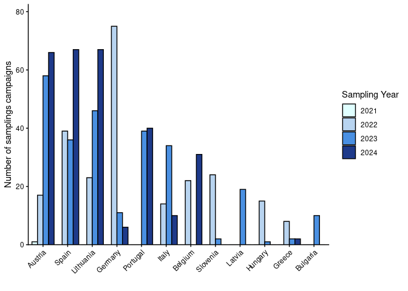
Numer of Rivers sampled per year and country
- Table
# A tibble: 29 × 3
# Groups: CountryResponsible [12]
CountryResponsible SamplingYear Rivers
<fct> <int> <int>
1 austria 2021 1
2 austria 2022 10
3 austria 2023 35
4 austria 2024 35
5 belgium 2022 12
6 belgium 2024 18
7 bulgaria 2023 1
8 germany 2022 58
9 germany 2023 10
10 germany 2024 5
# ℹ 19 more rows- Plot (without numbers)
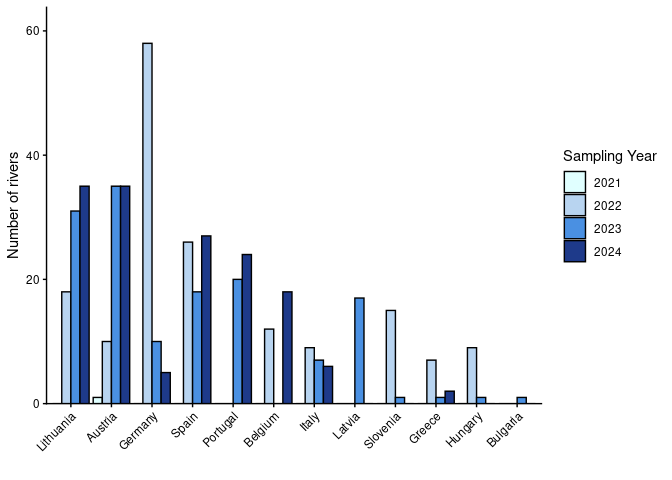
- Plot (with numbers)
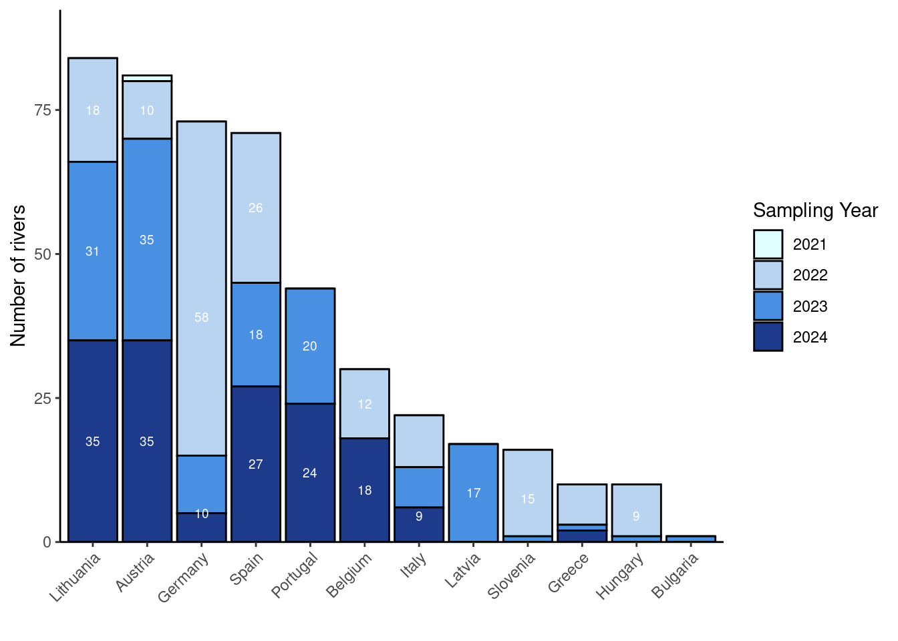
Most common types and quantities of litter per region? (Group B: riverbanks; Group C: floating litter)
Group B: Riverside Waste
Statistics of the variable RiversideWasteVariety_AttemptedSampling to see how many samplings were performed.
RiversideWasteVariety_AttemptedSampling
0 1
27 756 To work with the RiversideWasteVariety_ data, we need to filter the dataset to include only those rows where RiversideWasteVariety_AttemptedSampling is 1 (indicating that a sampling was attempted) and RiversideWasteVariety_Qualified is also 1 (indicating that the sampling was qualified).
Percentage of qualified samplings
This represents the percentage of validated data among the total number of sampling beign attempted.
total_rows total_valid pct_valid_total pct_valid_percent
1 785 551 70.2 70.2%# A tibble: 12 × 7
CountryResponsible total_rows total_valid `pct_valid_total(%)` total_attempts
<chr> <int> <int> <dbl> <int>
1 Austria 142 74 52.1 128
2 Belgium 53 49 92.5 52
3 Bulgaria 10 10 100 10
4 Germany 92 86 93.5 91
5 Greece 12 11 91.7 11
6 Hungary 16 15 93.8 16
7 Italy 58 51 87.9 55
8 Latvia 19 10 52.6 19
9 Lithuania 136 90 66.2 133
10 Portugal 79 45 57 77
11 Slovenia 26 24 92.3 25
12 Spain 142 86 60.6 139
# ℹ 2 more variables: valid_among_attempts <int>,
# `pct_valid_among_attempts(%)` <dbl>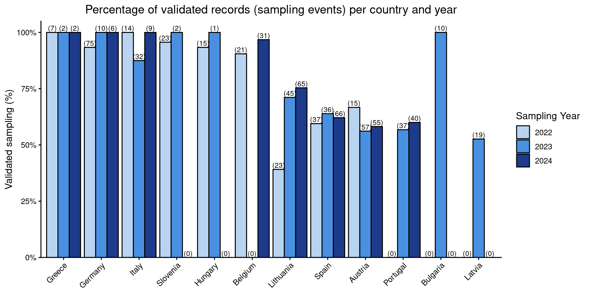
Most common types/quantities of litter
Firstly, we will pick up data to answer the question about group B. Only some variables are taken from the general dataset.
The, Attributes’ names are so complicated to work that I’ll remote the preceding information RiversideWasteVariety_Results_ which is common to all attributes; and finally to work with only the validated Group B dataset we create:
CAUTION! There are some NAs values in the litter items that are probably incorrect since the groups did find other items.
After meeting and email from Charlotte, we realise that NA in group B for some items it’s really a zero. So we update these columns replacing NA values with a 0.
Litter type abundance
We will obtain the plot for the most common (average abundance) litter type, as a table and then as a plot.
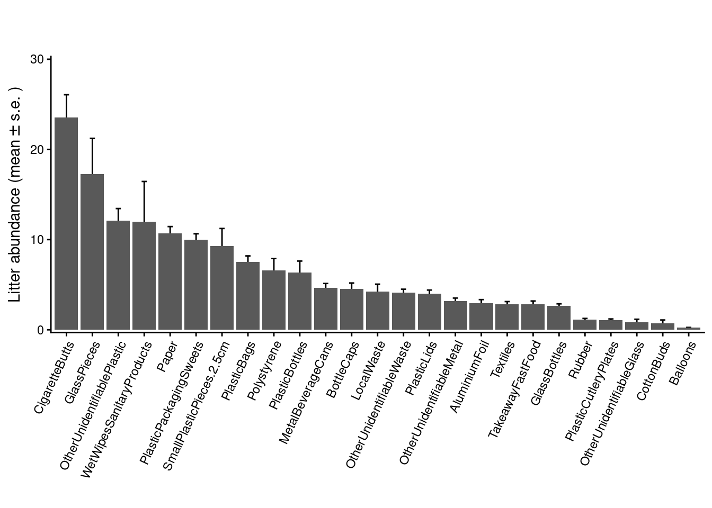
Litter type abundance per country
If we now want to visualize the contribution per each country, we have:
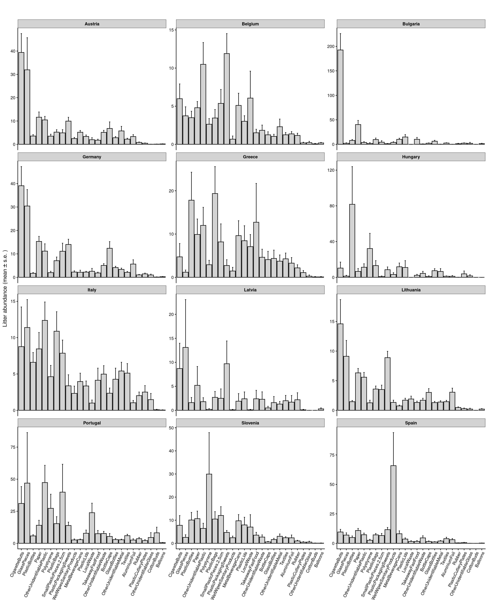
Litter type Proportion I - “Across‑type” proportions
- The first approach will be a “Across‑type” proportions.
- For each litter type, what fraction comes from each country? (not from an european total)
- total abundance of that litter type over each total country.
# A tibble: 300 × 5
CountryResponsible Litter_type Total_Abundance Global_Total Prop_Country
<fct> <chr> <dbl> <dbl> <dbl>
1 austria AluminiumFoil 246 1636 0.150
2 austria Balloons 12 126 0.0952
3 austria BottleCaps 503 2501 0.201
4 austria CigaretteButts 2915 12962 0.225
5 austria CottonBuds 6 396 0.0152
6 austria GlassBottles 209 1462 0.143
7 austria GlassPieces 2364 9527 0.248
8 austria LocalWaste 146 2343 0.0623
9 austria MetalBeverageCa… 383 2551 0.150
10 austria OtherUnidentifi… 3 462 0.00649
# ℹ 290 more rows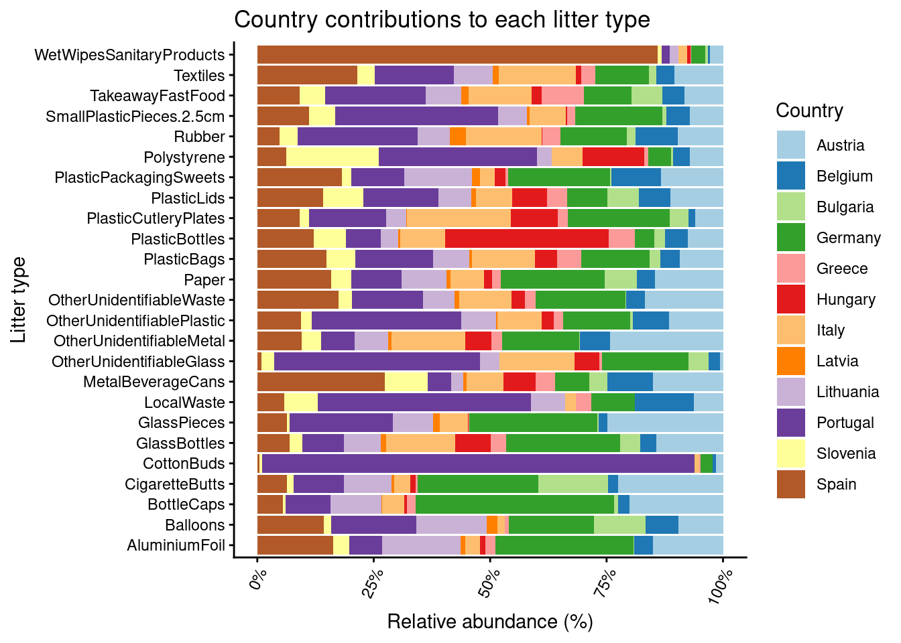
- HeatMaps
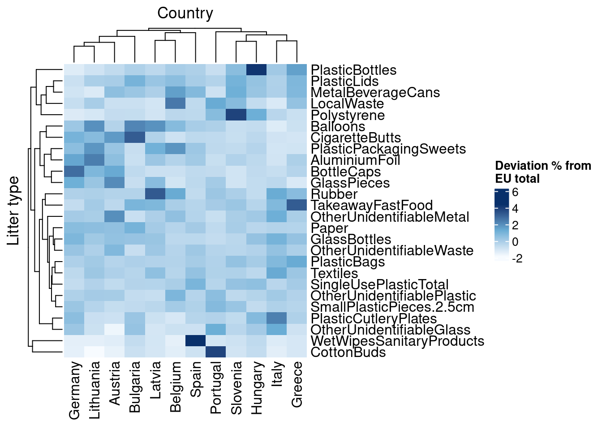
Multivariate Perspective
In order to see if there are significant differences across country in the community composition, we will perform a PERMANOVA test:
Permutation test for adonis under reduced model
Marginal effects of terms
Permutation: free
Number of permutations: 999
adonis2(formula = dist_mat ~ CountryResponsible, data = meta, permutations = 999, by = "margin")
Df SumOfSqs R2 F Pr(>F)
CountryResponsible 11 27.724 0.09814 5.3324 0.001 ***
Residual 539 254.764 0.90186
Total 550 282.488 1.00000
---
Signif. codes: 0 '***' 0.001 '**' 0.01 '*' 0.05 '.' 0.1 ' ' 1So, we conclude that there are significant differences among countries. but What are the items that explains these differences?
The answer will be addressed by performing a Multivariate Random Forest.
Call:
randomForest(x = comm_hel, y = as.factor(meta$CountryResponsible), ntree = 500, importance = TRUE)
Type of random forest: classification
Number of trees: 500
No. of variables tried at each split: 5
OOB estimate of error rate: 62.43%
Confusion matrix:
austria belgium bulgaria germany greece hungary italy latvia
austria 31 2 0 12 0 0 6 0
belgium 6 5 0 2 0 0 5 2
bulgaria 0 0 9 0 0 1 0 0
germany 10 3 0 41 0 0 2 0
greece 1 0 0 0 0 0 6 0
hungary 2 1 0 1 0 2 3 0
italy 10 3 0 4 0 0 20 0
latvia 2 2 0 1 0 0 0 0
lithuania 9 6 0 19 0 0 1 0
portugal 5 4 0 7 0 0 7 0
slovenia 4 0 0 0 0 0 5 0
spain 16 5 0 7 0 0 6 0
lithuania portugal slovenia spain class.error
austria 6 0 0 17 0.5810811
belgium 12 3 2 12 0.8979592
bulgaria 0 0 0 0 0.1000000
germany 18 6 0 6 0.5232558
greece 0 2 0 2 1.0000000
hungary 0 0 0 6 0.8666667
italy 1 1 0 12 0.6078431
latvia 5 0 0 0 1.0000000
lithuania 45 0 0 10 0.5000000
portugal 3 12 1 6 0.7333333
slovenia 1 4 0 10 1.0000000
spain 9 1 0 42 0.5116279Decisions have to be taken carefully since the prediction accuracy is very low (0.38). Furthermore, the estimated error rate (OOB) is high, so conclusion have to be taken with care.
Eventhough, the more important (differential across countries) litter components are:
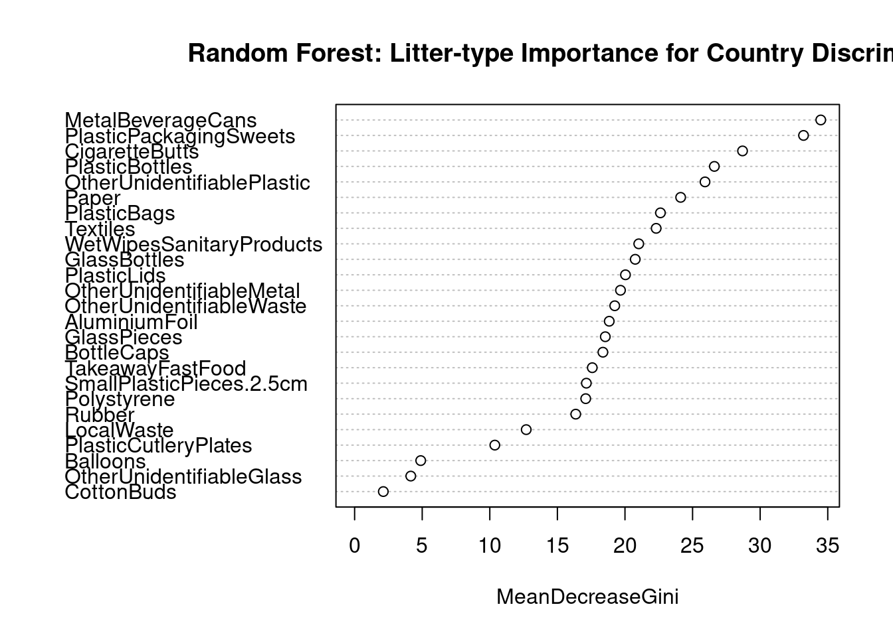
This plot of variable importance importance is telling us:
- A large
MeanDecreaseGini(MDG) means that X frequently appears in high‑up the tree splits and yields big purity gains → it’s structurally important to partitioning the data.- MDG tells you which features the trees “prefer” splitting on.
- Principal COmponent Analysis
Finally, we will perform a Principal Component Analysis (PCA) to see correlation among litter items and possible associations with countries
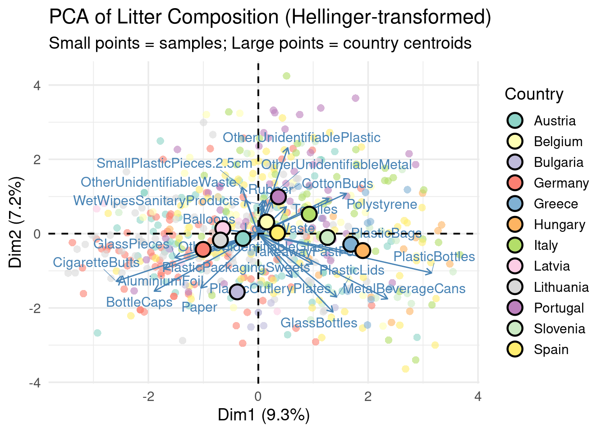
And the most important Items for the two forst principal components are:
- First PC
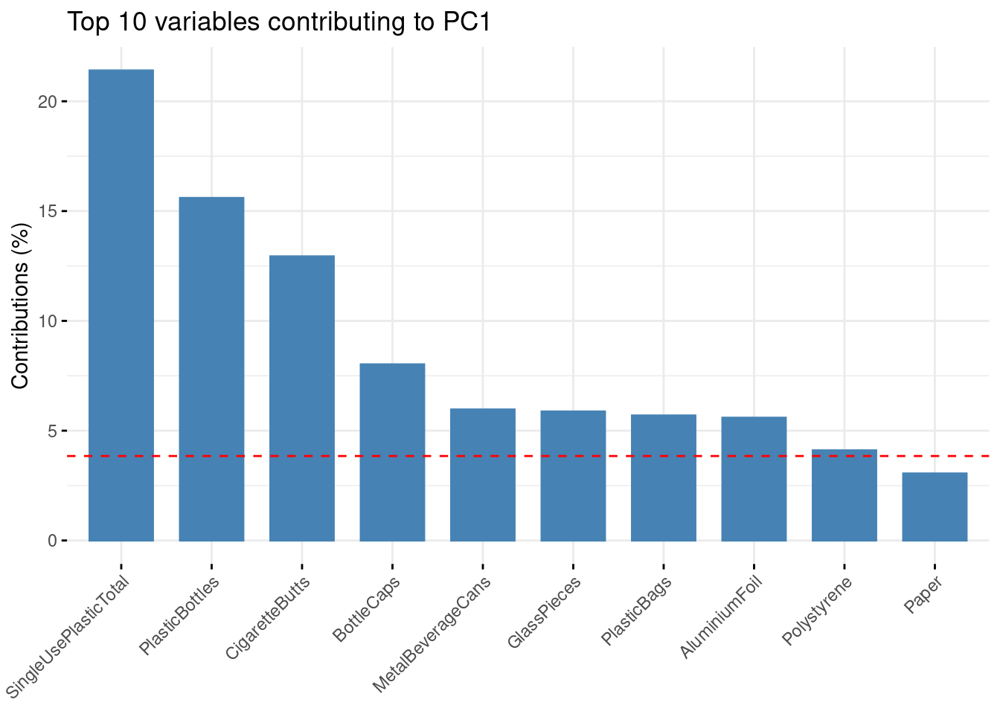
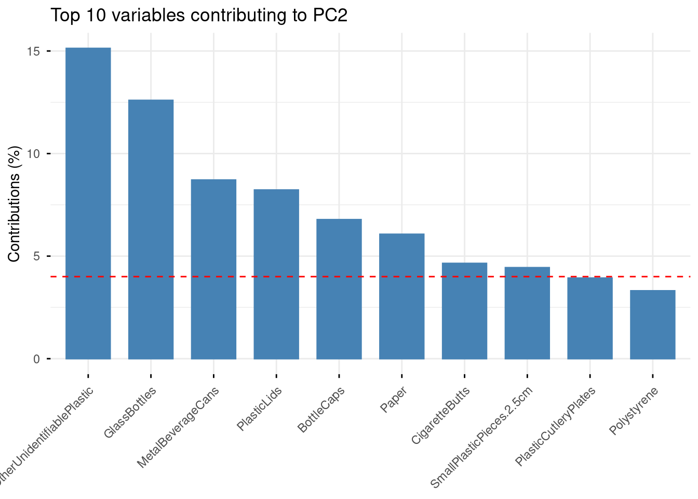
Group B: Single Use Plastic - Riverside Waste
We wil take as a subset the single use plastic (SUP) for the group B.
DatasetID CountryResponsible SamplingCampaign SamplingYear
1 at_6270 austria autumn 2022 2022
2 at_6297 austria autumn 2022 2022
3 at_6382 austria autumn 2022 2022
4 at_6393 austria autumn 2022 2022
5 at_6429 austria autumn 2022 2022
6 at_6429 austria autumn 2022 2022
SamplingCoordinatesLatitude SamplingCoordinatesLongitude SamplingRiverSystem
1 48.04275 14.42192 Danube
2 48.26034 13.03440 Danube
3 47.11828 13.81419 Danube
4 46.58301 13.84115 Danube
5 48.21108 16.43973 Danube
6 48.21108 16.43973 Danube
SamplingParticipants RiversideWasteVariety_AttemptedSampling
1 9 1
2 8 1
3 20 1
4 38 1
5 20 1
6 20 1
RiversideWasteVariety_Qualified PlasticBags PlasticBottles PlasticLids
1 1 2 0 0
2 1 0 1 4
3 1 0 0 0
4 1 34 22 13
5 1 7 22 17
6 1 7 22 17
TakeawayFastFood PlasticCutleryPlates PlasticPackagingSweets CottonBuds
1 2 0 1 0
2 1 1 14 0
3 0 0 2 0
4 2 0 34 0
5 9 3 10 2
6 9 3 10 2
WetWipesSanitaryProducts Polystyrene
1 1 0
2 3 0
3 0 1
4 0 0
5 7 6
6 7 6 DatasetID CountryResponsible SamplingCampaign SamplingYear
at_6429: 2 lithuania: 90 autumn 2021: 0 Min. :2022
at_6463: 2 germany : 86 autumn 2022:198 1st Qu.:2022
at_6972: 2 spain : 86 autumn 2023:144 Median :2023
at_6977: 2 austria : 74 autumn 2024: 50 Mean :2023
de_6237: 2 italy : 51 spring 2022: 1 3rd Qu.:2024
de_6457: 2 belgium : 49 spring 2023: 26 Max. :2024
(Other):539 (Other) :115 spring 2024:132
SamplingCoordinatesLatitude SamplingCoordinatesLongitude SamplingRiverSystem
Min. :37.18 Min. :-9.309 Length:551
1st Qu.:42.03 1st Qu.: 2.946 Class :character
Median :48.07 Median :12.331 Mode :character
Mean :47.47 Mean :10.912
3rd Qu.:51.33 3rd Qu.:16.923
Max. :57.75 Max. :27.488
SamplingParticipants RiversideWasteVariety_AttemptedSampling
Min. : 2.00 Min. :1
1st Qu.: 13.00 1st Qu.:1
Median : 19.00 Median :1
Mean : 19.58 Mean :1
3rd Qu.: 24.00 3rd Qu.:1
Max. :250.00 Max. :1
NA's :10
RiversideWasteVariety_Qualified PlasticBags PlasticBottles
Min. :1 Min. : 0.000 Min. : 0.000
1st Qu.:1 1st Qu.: 0.000 1st Qu.: 0.000
Median :1 Median : 3.000 Median : 1.000
Mean :1 Mean : 7.506 Mean : 6.334
3rd Qu.:1 3rd Qu.: 7.000 3rd Qu.: 4.000
Max. :1 Max. :196.000 Max. :576.000
PlasticLids TakeawayFastFood PlasticCutleryPlates
Min. : 0.000 Min. : 0.000 Min. : 0.000
1st Qu.: 0.000 1st Qu.: 0.000 1st Qu.: 0.000
Median : 1.000 Median : 0.000 Median : 0.000
Mean : 3.991 Mean : 2.828 Mean : 1.044
3rd Qu.: 4.000 3rd Qu.: 2.500 3rd Qu.: 1.000
Max. :115.000 Max. :102.000 Max. :49.000
PlasticPackagingSweets CottonBuds WetWipesSanitaryProducts
Min. : 0.000 Min. : 0.0000 Min. : 0.00
1st Qu.: 1.000 1st Qu.: 0.0000 1st Qu.: 0.00
Median : 4.000 Median : 0.0000 Median : 0.00
Mean : 9.984 Mean : 0.7187 Mean : 11.97
3rd Qu.: 11.500 3rd Qu.: 0.0000 3rd Qu.: 2.00
Max. :121.000 Max. :145.0000 Max. :1897.00
Polystyrene
Min. : 0.000
1st Qu.: 0.000
Median : 0.000
Mean : 6.563
3rd Qu.: 2.000
Max. :423.000
SUP type abundance
We will obtain the plot for the most common (average abundance) Single Use Plastic type
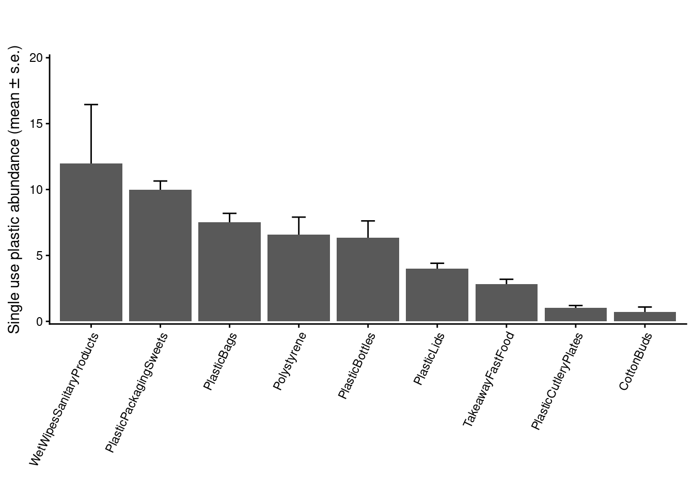
SUP type abundance per country
If we now want to visualize the contribution per each country, we have:
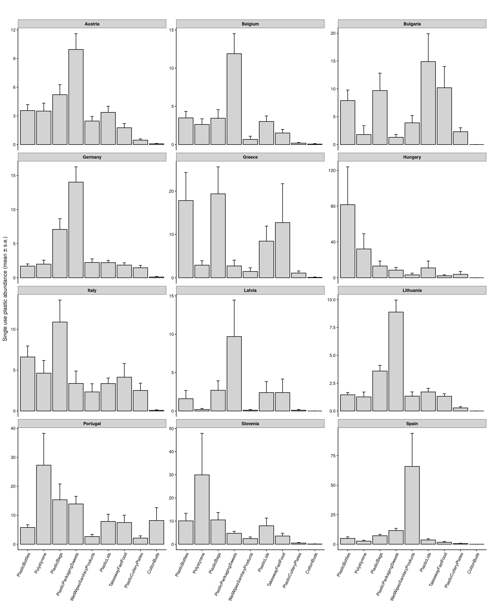
SUP type Proportion I - “Across‑type” proportions
- The first approach will be a “Across‑type” proportions.
- total abundance of that litter type over each total country.
# A tibble: 108 × 5
CountryResponsible Litter_type Total_Abundance Global_Total Prop_Country
<fct> <chr> <dbl> <dbl> <dbl>
1 austria CottonBuds 6 396 0.0152
2 austria PlasticBags 386 4136 0.0933
3 austria PlasticBottles 263 3490 0.0754
4 austria PlasticCutleryP… 34 575 0.0591
5 austria PlasticLids 249 2199 0.113
6 austria PlasticPackagin… 736 5501 0.134
7 austria Polystyrene 259 3616 0.0716
8 austria TakeawayFastFood 130 1558 0.0834
9 austria WetWipesSanitar… 182 6598 0.0276
10 belgium CottonBuds 3 396 0.00758
# ℹ 98 more rows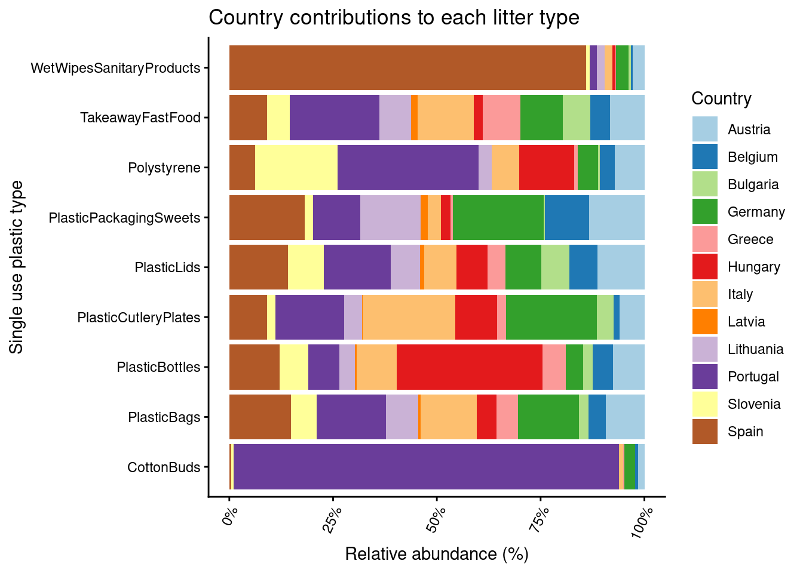
- HeatMaps
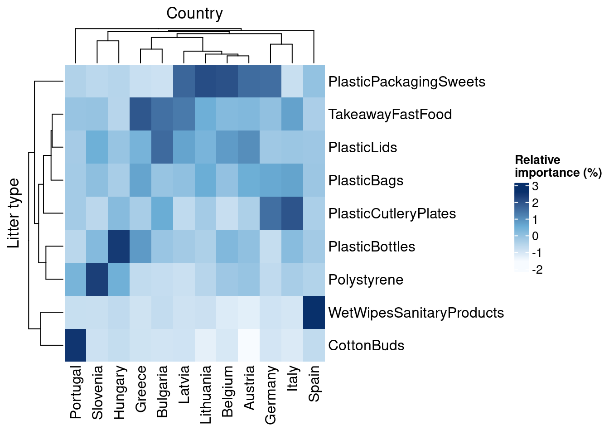
SUP Multivariate Perspective
In order to see if there are significant differences across country in the community composition, we will perform a PERMANOVA test:
Permutation test for adonis under reduced model
Marginal effects of terms
Permutation: free
Number of permutations: 999
adonis2(formula = dist_mat_SUP ~ CountryResponsible, data = meta, permutations = 999, by = "margin")
Df SumOfSqs R2 F Pr(>F)
CountryResponsible 11 23.006 0.09697 5.2616 0.001 ***
Residual 539 214.252 0.90303
Total 550 237.258 1.00000
---
Signif. codes: 0 '***' 0.001 '**' 0.01 '*' 0.05 '.' 0.1 ' ' 1So, we conclude that there are significant differences among countries. The R-Square value (0.098) means that the country “effects” explain 9.8% of the total variability. 90.2% is the remaining (unexplained) variability among countries. There is a significant country effect, but is small.
Or even better: There are statistically significant multivariate differences in litter composition among countries, although the effect size is modest (R² = 0.098).
We can look for heterocedasticity among countries
Homogeneity of multivariate dispersions
Call: betadisper(d = dist_mat_SUP, group = meta_SUP$CountryResponsible)
No. of Positive Eigenvalues: 9
No. of Negative Eigenvalues: 0
Average distance to median:
austria belgium bulgaria germany greece hungary italy latvia
0.6196 0.6059 0.5416 0.5887 0.4907 0.5711 0.6412 0.5485
lithuania portugal slovenia spain
0.5783 0.6154 0.5959 0.6310
Eigenvalues for PCoA axes:
(Showing 8 of 9 eigenvalues)
PCoA1 PCoA2 PCoA3 PCoA4 PCoA5 PCoA6 PCoA7 PCoA8
63.710 39.977 35.962 29.495 22.832 18.822 15.019 9.756
Permutation test for homogeneity of multivariate dispersions
Permutation: free
Number of permutations: 999
Response: Distances
Df Sum Sq Mean Sq F N.Perm Pr(>F)
Groups 11 0.4642 0.042201 1.5106 999 0.126
Residuals 539 15.0577 0.027936 The heterocedasticity is significant, so we must be carefully conclude about the inter-countries differences. There is a Country effect butis small.
If we need to parametrize this model, we should use a Mixed Multivariate Model (necessary?)
but What are the items that explains these differences?
The answer will be addressed by performing a Multivariate Random Forest.
Call:
randomForest(x = comm_hel_SUP, y = as.factor(meta_SUP$CountryResponsible), ntree = 500, importance = TRUE)
Type of random forest: classification
Number of trees: 500
No. of variables tried at each split: 3
OOB estimate of error rate: 73.32%
Confusion matrix:
austria belgium bulgaria germany greece hungary italy latvia
austria 16 4 0 14 1 0 8 0
belgium 5 9 1 10 0 0 4 0
bulgaria 1 1 5 0 0 0 2 0
germany 9 3 0 30 0 1 6 0
greece 2 0 0 0 0 1 6 0
hungary 1 2 1 1 0 3 3 0
italy 8 4 0 8 0 2 19 0
latvia 1 3 0 3 0 0 0 0
lithuania 13 10 0 18 0 1 3 0
portugal 8 4 0 4 0 0 3 0
slovenia 4 1 0 3 1 0 4 0
spain 9 11 1 15 0 1 11 0
lithuania portugal slovenia spain class.error
austria 17 4 1 9 0.7837838
belgium 11 3 0 6 0.8163265
bulgaria 0 1 0 0 0.5000000
germany 22 4 0 11 0.6511628
greece 0 1 1 0 1.0000000
hungary 3 1 0 0 0.8000000
italy 1 1 1 7 0.6274510
latvia 2 0 0 1 1.0000000
lithuania 37 1 1 6 0.5888889
portugal 10 6 3 7 0.8666667
slovenia 5 4 0 2 1.0000000
spain 13 2 1 22 0.7441860Decisions have to be taken carefully since the prediction accuracy is very low (0.27). Furthermore, the estimated error rate (OOB) is high, so conclusion have to be taken with care.
Even though, the more important (differential across countries) litter components are:
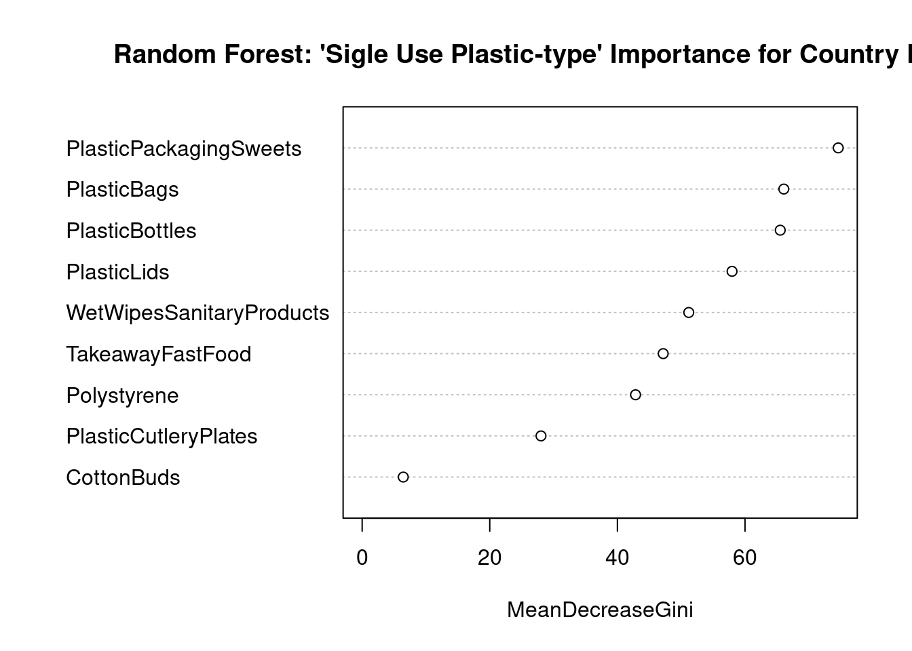
This plot of variable importance importance is telling us:
A large
MeanDecreaseAccuracy(MDA) means that, when you break the relationship between that predictor and the response, the model’s accuracy suffers a lot → it’s an important predictor for correct country assignments.MDA is generally the more reliable gauge of predictive importance, since it directly measures impact on OOB‐accuracy.
A large
MeanDecreaseGini(MDG) means that X frequently appears in high‑up the tree splits and yields big purity gains → it’s structurally important to partitioning the data.- MDG is faster to compute and tells you which features the trees “prefer” splitting on, but can overweight high–cardinality or continuous variables.
Finally, we will perform a Principal Component Analysis (PCA) to see correlation among litter items and possible associations with countries
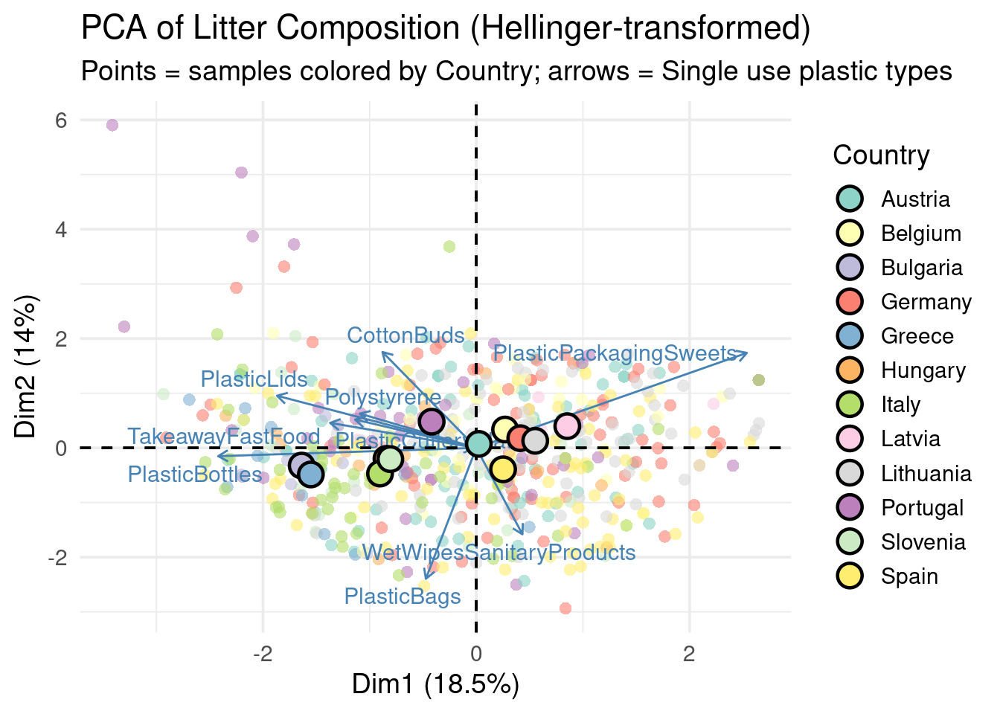
And the most important Items for the two forst principal components are:
- First PC
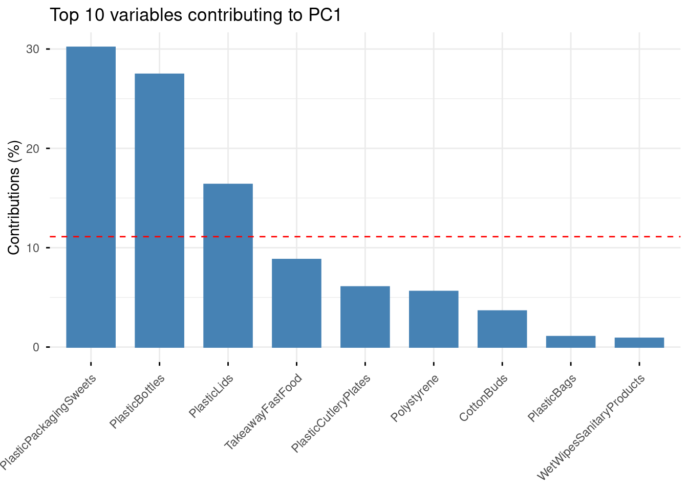
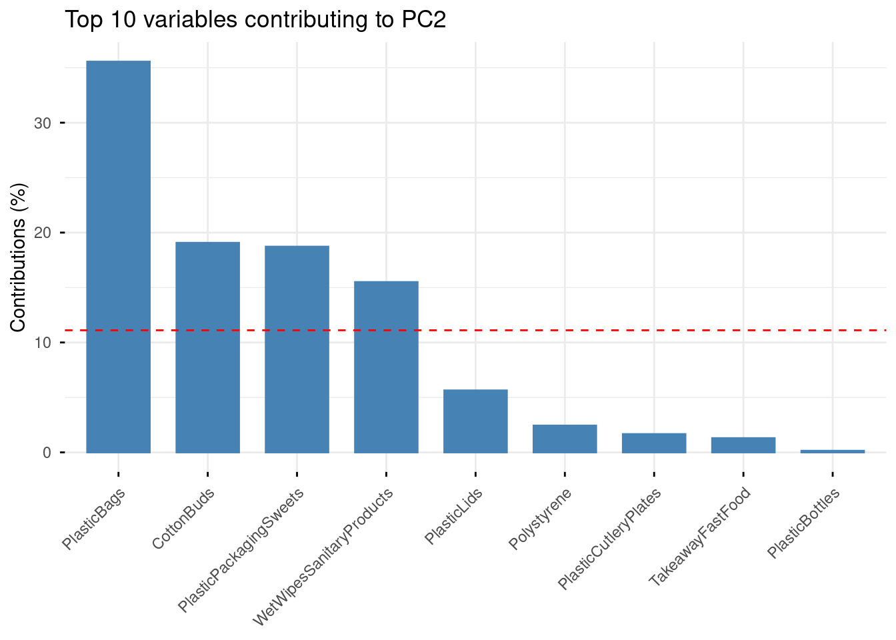
Floating DATA
Data loading
# A tibble: 375 × 15
DatasetID CountryResponsible SamplingYear SamplingAttempted DatasetQualified
<fct> <chr> <dbl> <dbl> <dbl>
1 at_6270 Austria 2022 1 1
2 at_6297 Austria 2022 1 1
3 at_6349 Austria 2022 1 1
4 at_6372 Austria 2022 1 1
5 at_6382 Austria 2022 1 1
6 at_6393 Austria 2022 1 1
7 at_6414 Austria 2022 1 1
8 at_6448 Austria 2022 1 1
9 at_6703 Austria 2023 1 1
10 at_6718 Austria 2023 1 1
# ℹ 365 more rows
# ℹ 10 more variables: SamplingDate <date>, SamplingCoordinatesLatitude <dbl>,
# SamplingCoordinatesLongitude <dbl>, SamplingRiverSystem <fct>,
# FloatingMacro_AttemptedSampling <dbl>, FloatingMacro_Qualified <dbl>,
# FloatingMacro_ObservationTimeInMinutes <dbl>,
# FloatingMacro_RiverWidth <fct>, FloatingMacro_ObservedWidth <fct>,
# FloatingMacro_AmountOfFloatingMacrolitter <dbl>Sampling Effor for Floating Data
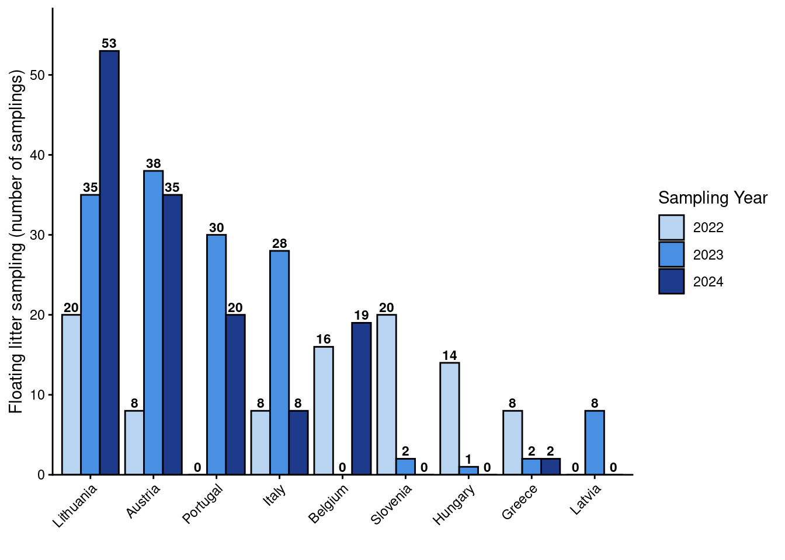
Macrolitter Flow calculation
The variable FlowMacrolitter is represented as the Number of floating macrolitter \(m^{-1}\) \(h^{-1}\).
# A tibble: 375 × 18
DatasetID CountryResponsible SamplingYear SamplingAttempted DatasetQualified
<fct> <chr> <dbl> <dbl> <dbl>
1 at_6270 Austria 2022 1 1
2 at_6297 Austria 2022 1 1
3 at_6349 Austria 2022 1 1
4 at_6372 Austria 2022 1 1
5 at_6382 Austria 2022 1 1
6 at_6393 Austria 2022 1 1
7 at_6414 Austria 2022 1 1
8 at_6448 Austria 2022 1 1
9 at_6703 Austria 2023 1 1
10 at_6718 Austria 2023 1 1
# ℹ 365 more rows
# ℹ 13 more variables: SamplingDate <date>, SamplingCoordinatesLatitude <dbl>,
# SamplingCoordinatesLongitude <dbl>, SamplingRiverSystem <fct>,
# FloatingMacro_AttemptedSampling <dbl>, FloatingMacro_Qualified <dbl>,
# FloatingMacro_ObservationTimeInMinutes <dbl>,
# FloatingMacro_RiverWidth <fct>, FloatingMacro_ObservedWidth <fct>,
# FloatingMacro_AmountOfFloatingMacrolitter <dbl>, TimeInHours <dbl>, …Macrolitter Flow Visualization
Differences across countries
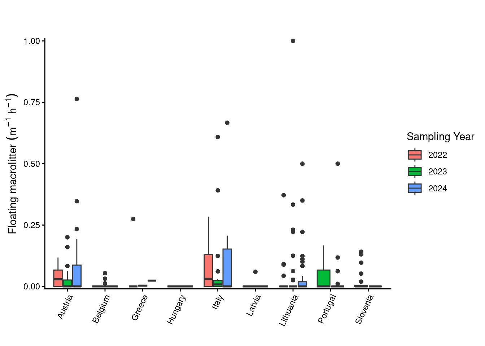
Statistical test
- Generalize linear mixed model (Tweedie)
Family error distribution was selected due to the data restriction (only positive values with high numbers of zeroes)
Family: tweedie ( log )
Formula: FlowMacrolitter ~ CountryResponsible
Data: FlowData
AIC BIC logLik -2*log(L) df.resid
290.0 331.8 -134.0 268.0 320
Dispersion parameter for tweedie family (): 2.16
Conditional model:
Estimate Std. Error z value Pr(>|z|)
(Intercept) -3.0551 0.3049 -10.018 < 2e-16 ***
CountryResponsibleBelgium -2.1601 1.0099 -2.139 0.0324 *
CountryResponsibleGreece 2.4984 0.5812 4.299 1.72e-05 ***
CountryResponsibleHungary -49.0697 22469.0664 -0.002 0.9983
CountryResponsibleItaly 0.6001 0.5143 1.167 0.2433
CountryResponsibleLatvia 1.5887 0.8014 1.982 0.0474 *
CountryResponsibleLithuania 0.0708 0.3976 0.178 0.8587
CountryResponsiblePortugal 1.0816 0.4367 2.477 0.0132 *
CountryResponsibleSlovenia -0.8575 0.7405 -1.158 0.2469
---
Signif. codes: 0 '***' 0.001 '**' 0.01 '*' 0.05 '.' 0.1 ' ' 1Data: FlowData
Models:
mod_null: FlowMacrolitter ~ 1, zi=~0, disp=~1
mod_full: FlowMacrolitter ~ CountryResponsible, zi=~0, disp=~1
Df AIC BIC logLik deviance Chisq Chi Df Pr(>Chisq)
mod_null 3 318.27 329.68 -156.14 312.27
mod_full 11 290.01 331.83 -134.00 268.01 44.266 8 5.068e-07 ***
---
Signif. codes: 0 '***' 0.001 '**' 0.01 '*' 0.05 '.' 0.1 ' ' 1- Posthoc with multple comparisons
contrast ratio SE df null z.ratio p.value
Austria / Belgium 9.00e+00 9.00e+00 Inf 1 2.139 0.4464
Austria / Greece 0.00e+00 0.00e+00 Inf 1 -4.299 0.0006
Austria / Hungary 2.05e+21 4.60e+25 Inf 1 0.002 1.0000
Austria / Italy 1.00e+00 0.00e+00 Inf 1 -1.167 0.9634
Austria / Latvia 0.00e+00 0.00e+00 Inf 1 -1.982 0.5557
Austria / Lithuania 1.00e+00 0.00e+00 Inf 1 -0.178 1.0000
Austria / Portugal 0.00e+00 0.00e+00 Inf 1 -2.477 0.2431
Austria / Slovenia 2.00e+00 2.00e+00 Inf 1 1.158 0.9650
Belgium / Greece 0.00e+00 0.00e+00 Inf 1 -4.304 0.0006
Belgium / Hungary 2.36e+20 5.30e+24 Inf 1 0.002 1.0000
Belgium / Italy 0.00e+00 0.00e+00 Inf 1 -2.634 0.1726
Belgium / Latvia 0.00e+00 0.00e+00 Inf 1 -3.086 0.0524
Belgium / Lithuania 0.00e+00 0.00e+00 Inf 1 -2.240 0.3795
Belgium / Portugal 0.00e+00 0.00e+00 Inf 1 -3.203 0.0368
Belgium / Slovenia 0.00e+00 0.00e+00 Inf 1 -1.108 0.9732
Greece / Hungary 2.49e+22 5.59e+26 Inf 1 0.002 1.0000
Greece / Italy 7.00e+00 4.00e+00 Inf 1 2.942 0.0790
Greece / Latvia 2.00e+00 2.00e+00 Inf 1 1.021 0.9840
Greece / Lithuania 1.10e+01 6.00e+00 Inf 1 4.361 0.0004
Greece / Portugal 4.00e+00 2.00e+00 Inf 1 2.421 0.2722
Greece / Slovenia 2.90e+01 2.40e+01 Inf 1 4.011 0.0020
Hungary / Italy 0.00e+00 0.00e+00 Inf 1 -0.002 1.0000
Hungary / Latvia 0.00e+00 0.00e+00 Inf 1 -0.002 1.0000
Hungary / Lithuania 0.00e+00 0.00e+00 Inf 1 -0.002 1.0000
Hungary / Portugal 0.00e+00 0.00e+00 Inf 1 -0.002 1.0000
Hungary / Slovenia 0.00e+00 0.00e+00 Inf 1 -0.002 1.0000
Italy / Latvia 0.00e+00 0.00e+00 Inf 1 -1.164 0.9638
Italy / Lithuania 2.00e+00 1.00e+00 Inf 1 1.088 0.9761
Italy / Portugal 1.00e+00 0.00e+00 Inf 1 -0.928 0.9914
Italy / Slovenia 4.00e+00 3.00e+00 Inf 1 1.841 0.6547
Latvia / Lithuania 5.00e+00 4.00e+00 Inf 1 1.937 0.5880
Latvia / Portugal 2.00e+00 1.00e+00 Inf 1 0.630 0.9994
Latvia / Slovenia 1.20e+01 1.20e+01 Inf 1 2.441 0.2618
Lithuania / Portugal 0.00e+00 0.00e+00 Inf 1 -2.505 0.2291
Lithuania / Slovenia 3.00e+00 2.00e+00 Inf 1 1.287 0.9355
Portugal / Slovenia 7.00e+00 5.00e+00 Inf 1 2.608 0.1832
P value adjustment: tukey method for comparing a family of 9 estimates
Tests are performed on the log scale